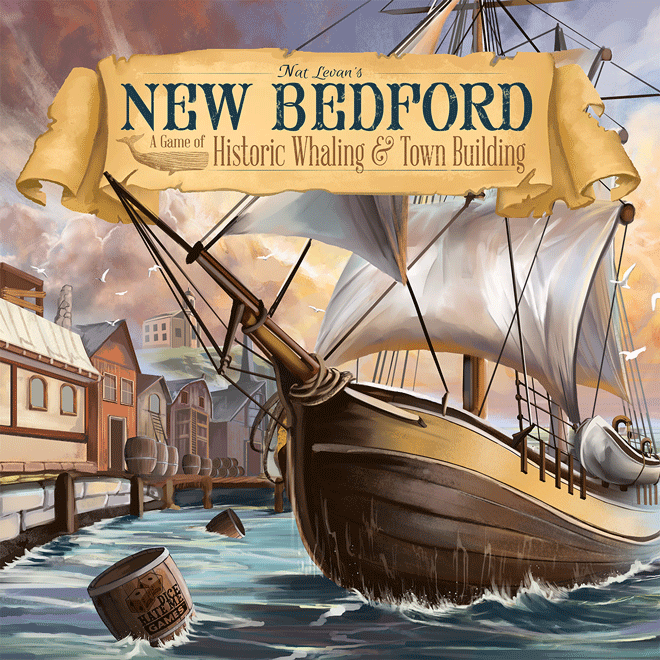
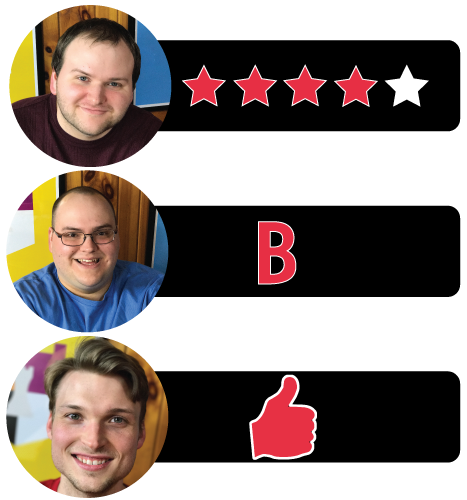

In this New Bedford review, Board Crazy examines the board game designed by Nat Levan and published by Dice Hate Me Games. In New Bedford, progress is driven by whaling, so all hands on deck for this seafaring adventure.

D reviews New Bedford

(Author’s note: this review is meant to accompany our gameplay video and will not go in-depth on the game’s rules. If you’re interested in learning how the game is played, please watch the video. It’s not bad.)
“The Right Whale” – Unless you’re Graham, this is the most common whale in the game.
Nat Levan’s New Bedford is a game that really surprised me the first time I played it with my cohorts. I’ll admit that I didn’t have high hopes for the game initially. For starters, reading the rulebook was an exercise in patience. I remember re-reading one particular section regarding the order of play about five times before just moving on and hoping it would make sense as I read further. It didn’t actually become clear until I sat down with Graham the first time we played and we worked it out together. Also, for a game where whaling is seemingly pushed as being the major attraction of the gameplay, the number of building tiles available is staggering the first time you lay them out. I figured that, surely, some must be removed from play for a three-player game. But no, you use them all. Prepare to crane your neck.
Fortunately, my worries were allayed almost immediately once we actually started playing New Bedford. The flow of the game becomes quick and intuitive once you get going, and once the town starts taking shape it suddenly doesn’t seem like there are that many building tiles to choose from. In fact, this is probably the most fun I’ve had killing intelligent creatures and deforesting large swaths of land since… well, alright, Breath of the Wild wasn’t very long ago. Maybe I have a problem. But still! This game works well and I could see it getting fairly regular play at our table.
Perhaps the most immediately pleasing trait of New Bedford is the fact that the game moves. Even the first time we walked through the game, it was obvious that it wouldn’t turn into a slog. The box lists the play time as 30-60 minutes and I would say the upper estimation is pretty accurate, which is a pleasant change of pace from what I’m used to experiencing. Typically, our games take about twice as long as what the box says. I’m not sure if that’s because we take things too seriously or if we’re just really dumb, but it’s still nice. The game is played over twelve turns and the early turns usually don’t take more than a minute to complete. It isn’t until the players start launching ships that things really slow down a little, but even then the longest turns aren’t unreasonably long (even if you’re playing with Graham).
“The Inn” – One of the more powerful buildings in the Game. This building allows you to play one of your workers again using only town and whaling actions.
The game also does well to make sure that both the city building and the whaling are fun and important. It’s satisfying to see your side of the town board expand with new locales and even more satisfying when one of your opponents is forced to pay you to make use of a service. You’d be hard-pressed to win by focusing exclusively on this facet of the game, but ignoring it too much is likely to leave you lacking at the end of the game. The building tiles are not perfectly balanced (why hello, Inn), but I think the designers did a good job overall considering how many of them there are.
“The Whaling Bag” – This is the bag you use to draw your whales from during the whaling phase.
The whaling mechanic – which is how you’ll probably be scoring most of your points – is unique and rightfully gets most of the focus when the game is discussed. The random draws are tense and when an opponent pulls one of the more prized whales it is legitimately deflating. The fact that there are benefits to having both the first ship out to sea and the last really increases the strategy and is one of the finer points of the game’s design. My only critique is that I wish there was a wider variety of whale tiles, as the drawing can get a little bland towards the end of the game if you know that most or all of the good tokens have been taken. I realize, though, that this could have produced some balancing problems.
Overall, New Bedford is a really enjoyable game. It’s fast and simple enough to be family-friendly, while still offering enough strategy for those who are looking for something deeper. The art is very nice and evocative of the era in which the game is set, and the components are sturdy. I think it also handles the ethical quandaries of basing a game around whaling – an issue very relevant in modern times – about as well as it can without shaming the players for having fun. I haven’t tried the single-player rules in order to comment on them, but having the option is a nice inclusion (and the captains seem pretty cool). I have some minor worries about the long-term re-playability of the game, and I’m still not a fan of the rulebook, but based on my experiences playing New Bedford thus far I highly recommend it to anyone looking for some quick, but not mindless, fun.
D’s Rating: Four Stars out of Five.
Will reviews New Bedford

Isn’t whaling awesome? There’s the fresh sea air, the pointy harpoons, the hard tack and rum, scurvy – what isn’t there to like? Okay okay, maybe you’re right – it is a tad barbaric and unethical. That’s why it’s better to do it in your imagination, and this is where New Bedford comes in. It’s important to note off the bat, New Bedford is not strictly a whaling game. Actually, there’s quite a lot more to it, from town building to resource management, and a bit in between. In fact, the more I played this board game, the more I realized how deep it could be. By the time I was counting up my victory points to discover I lost, I realized that I quite like this one.
“The Bakery” – If your strategy is to stock up on food (see Will’s strategy), then look no place else. The bakery allows you to take 4 food.
At the start, you assume the role of a ship captain and immediately begin collecting resources (food, wood, bricks, etc.). Most of the pieces are made of wood that is sturdy and smells surprisingly good (oh that ship’s wheel). Over the early rounds, you’ll most likely spend most of your time collecting wood to build ships and food to feed your crew. Or you could spend a round or two amassing bricks in order to construct new buildings in town. I don’t recommend building as a strategy to win the game, but it will earn you some extra victory points, which do come in handy at the end of the game. But sooner rather than later, players always end up on the high seas, hunting for a variety of whales. Each kind of whale is worth a different amount of money and victory points, with the most common being worth the least in both categories. This goes on for 12 rounds, which go quicker than you’d think, and at the end, victory points are counted and a champion is named. Gameplay-wise, it’s not that complicated, but there’s just enough there for gamers who really like to strategize and plan.
“The Sperm Whale” – Anyone else find it interesting that Moby Dick was a sperm whale?
Whaling is the heart and soul of New Bedford, so if you have any qualms with roleplaying as a whaler, you might want to sit this one out. However, this game does not glorify or promote whaling in any way. New Bedford is based on actual history, as whaling was a huge cash business back in the day. I always appreciate a game that shines some light on aspects of history that most people have forgotten about.
All that being said, I should reiterate that while I like New Bedford, I don’t necessarily love it. There are a number of flaws that jumped out at me during my first handful of sessions. For instance, there’s a noticeable imbalance when it comes to the abilities attached to the building cards. Some of these cards are simply way more desirable than others, like the Lighthouse and Inn buildings, which will pop up in every game you play. This imbalance definitely negatively affects replayability. Also, the rulebook could have been written and ordered in a much better way. There are some elements of the game that I’m still not quite sure about because of the instructions.
Then again, my friends and I were still able to quickly pick up the rules of New Bedford, and we’ve had a healthy amount of fun playing it. The game is only for up to four players, but there is an expansion that adds a fifth player, and I’ve heard that it’s very good. Considering its flaws, I still would want to play New Bedford, which indicates (to me at least) that it’s pretty entertaining. Give it a look if you’re in the market for something newer and slightly different than the average board game.
I give it a: B
Graham reviews New Bedford

New Bedford: A Game of Historic Whaling & Town Building is… exactly that – a simple worker placement game, in which you are victorious by either controlling the town or dominating the whaling industry, or a combination of the two.
“The Whale Track” – Don’t lose this piece. It’s important.
New Bedford is a game I wanted to enjoy. It has resource management, worker placement, and city building – all things I really like in board games and did like in this game, for the most part. However, it did not come without its flaws. First, the Rulebook needs to be clearer. I spent more time trying to decipher the rulebook than I did playing the game. I understand there are times when game designers may not think of a bizarre situation or of the players’ need to use some common sense to interpret an unusual scenario, but there should never be a time when a fundamental mechanic of the game leaves everyone playing scratching their heads. For example, the explanation of the whaling track, in particular the final row. If you watch our video, you’ll see that you never whale from said row, but there is no note or FAQ that points this out. It leaves players with uncertainty, which can hinder the enjoyment of the game. Another issue with New Bedford is that some of the building tiles seem to be a little overpowered, specifically The Inn. In the few games I played, I found that whoever had The Inn had a significant advantage over their competitors. The game ended up with the
“The Bowhead Whale” – How can you lose with the bowhead whale? Easy, bank on getting right whales as your strategy.
other players either trying to play prevent or catch-up with the owner of The Inn. We’ve all played games with this problem, and we all know how it can ruin the experience of an enjoyable board game.
With those criticisms said, New Bedford does have its charm. The game is played in twelve rounds, which doesn’t take as long as you’d think, and it forces you to act quickly and be aggressive. If you try to take it slow, it’s a surefire way to lose. Another thing I love about the game is that luck is mostly removed from it. Yes, there is a tiny bit when it comes to whaling, but I found that I can use a little bit of math and statistics to determine the most strategic plays each turn. My favorite part about this game is the whaling. Come on, who doesn’t love a good whaling expedition? But really, it’s a unique game mechanic that I think provides a lot of depth to New Bedford. On top of that, it is probably the most effective strategy in the game, and it would be tough to win without it.
I know this review focused a lot on my critiques of the game, which is probably misleading from my overall feelings on it. New Bedford is an enjoyable game that, despite its flaws, fulfilled my desire for strategy, competition, and whaling a good time. I give New Bedford one thumb up.

Leave a Reply
You must be logged in to post a comment.